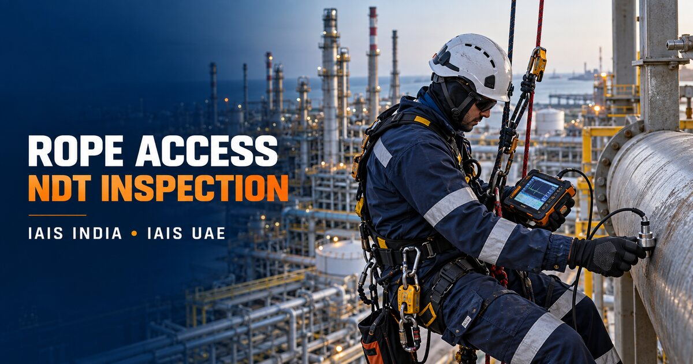

Protect critical assets and people
Make essential inspection and maintenance possible in locations that are difficult, costly or disruptive to access by conventional means.
Our operations in India and the UAE help asset owners reach difficult locations, understand asset condition and complete essential work safely across global project locations.


Integrity & Advanced Inspection Solutions India Pvt. Ltd. and Integrity & Advanced Inspection Solutions UAE LLC coordinate inspection and maintenance support from Chennai and Abu Dhabi.
Our operating experience began in 2012, serving industrial clients with non-destructive testing, metallurgical services and post-weld heat treatment. As client requirements expanded, our capability developed into advanced NDT, marine and offshore inspection, shutdown support, drone inspection, rope access and integrated asset integrity services.
Today, our India and UAE operations bring access specialists and technical specialists together under one coordinated execution plan. This helps us plan regional and international mobilisation while delivering consistent technical control and reporting.
Our decisions are guided by the condition of the asset, the safety of the team and the usefulness of the result delivered to the client.
Make essential inspection and maintenance possible in locations that are difficult, costly or disruptive to access by conventional means.
Deploy the right combination of rope access, inspection and trade-qualified personnel for each scope, asset and operating environment.
Deliver traceable observations, measurements, photographs, limitations and recommendations through clear technical reporting.
Rope access is the delivery platform. The value comes from the inspection or maintenance competence applied at the workface.
Personnel certification and trade qualifications are selected for the specific project and verified before mobilisation.
View all rope access servicesUT, MT, PT, VT, thickness measurement and corrosion surveys.
PAUT, TOFD and specialised ultrasonic inspection support.
Steel structures, towers, chimneys, façades and connection points.
Platforms, rigs, FPSO, FSO and shipboard inspection support.
Mechanical, coating, cleaning and minor repair activities.
Site-specific rescue planning, standby teams and drills.
Every project begins with the work requirement and site conditions. The access system is then engineered around the technical task.
We define access, anchors, exclusion zones, equipment, dropped-object control, communication and rescue arrangements before execution. During the project, supervision and documentation remain aligned with the agreed method statement and client procedure.
Review drawings, workface geometry, operating constraints and task requirements.
Combine certified rope access personnel with qualified inspectors or trades.
Keep a practical rescue plan and suitable equipment available throughout the work.
Issue clear evidence of condition, work completed and items requiring action.
IAIS India and IAIS UAE support projects across onshore, offshore, marine and infrastructure environments. Mobilisation plans are developed around local entry requirements, site inductions, offshore certification, medicals, travel and client-specific documentation.
Share the asset, work location, scope, schedule and certification requirements. Our technical team will develop the appropriate execution approach.